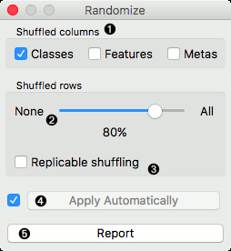
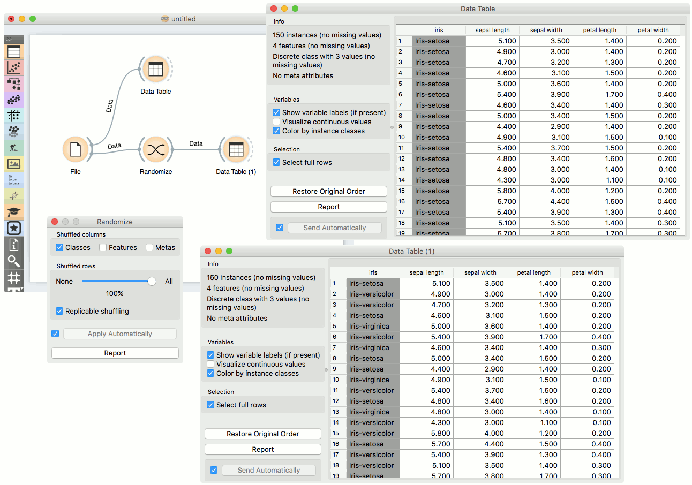
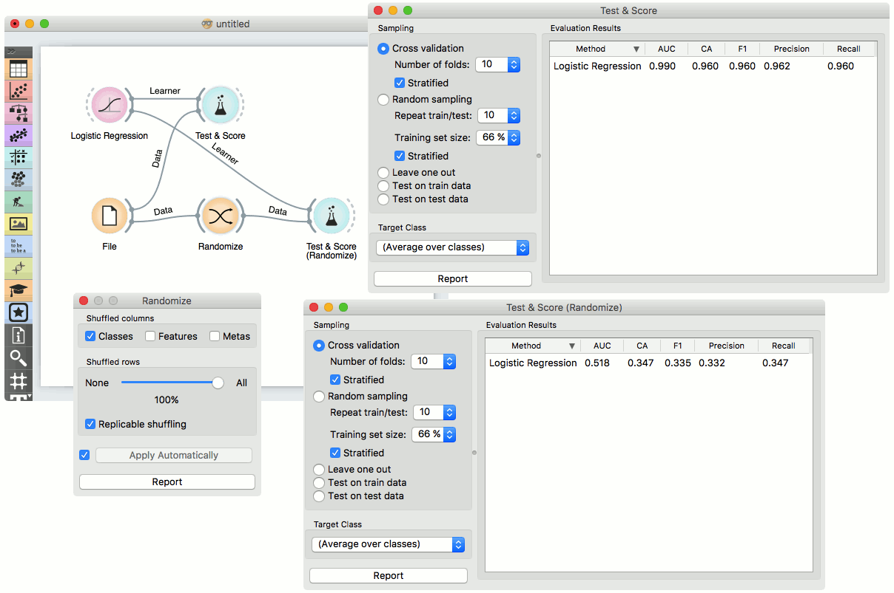

Randomize
Shuffles classes, attributes and/or metas of an input dataset.
Inputs
- Data: input dataset
Outputs
- Data: randomized dataset
The Randomize widget receives a dataset in the input and outputs the same dataset in which the classes, attributes or/and metas are shuffled.

- Select group of columns of the dataset you want to shuffle.
- Select proportion of the dataset you want to shuffle.
- Produce replicable output.
- If Apply automatically is ticked, changes are committed automatically. Otherwise, you have to press Apply after each change.
- Produce a report.
Example
The Randomize widget is usually placed right after (e.g. File widget. The basic usage is shown in the following workflow, where values of class variable of Iris dataset are randomly shuffled.

In the next example we show how shuffling class values influences model performance on the same dataset as above.
